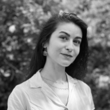

About
We are researchers at Queen Margaret University & The University of Edinburgh who work on better understanding bilingualism for autistic people. We work with autistic people and their families, practitioners and educators to make sure that our research reaches the people that need it the most.
We hope that these resources will help parents communicate with their children without being worried, and show that speaking your preferred language can only bring you closer to your children.
Dr Rachael Davis
- Child development
- Children's voices in education
- Nerodiversity
I am a developmental psychologist whose research focuses on Neurodivergent lived experiences, bilingualism and education.
Central to my work is a commitment to involving the communities that I work with in the research process; ensuring this research has a strong participatory ethos and eal-world relevance to the people that matter.
I’m a lecturer in Psychology & Education at QMU in Edinburgh, and before this, I was a Research fellow at the SMRC, University of Edinburgh.
I am part of an advisory board working with the Scottish Government on how to increase understanding of autism in the general public across Scotland (Different Minds) and a member of the Embracing Complexity.
Dr Bérengère Digard
- Adult autistic experience
- Social cognition
I am an early career researcher interested in autism and neurodiversity.
After studying Biology and Neurobiology in Lyon (France), I came to Edinburgh to do a PhD researching whether being bilingual shaped the social life, mind, and brain of autistic and non-autistic people.
Since then, I have expanded my research into other aspects of the autism & bilingualism experience, and I am also supervising several projects looking at mental health, masking, intersectionality, social cognition, and access to healthcare for neurodivergent people.
I am passionate about community engagement and science communication, and always ensure that autistic people are involved in my outreach and impact projects.
My staff page can be found here.